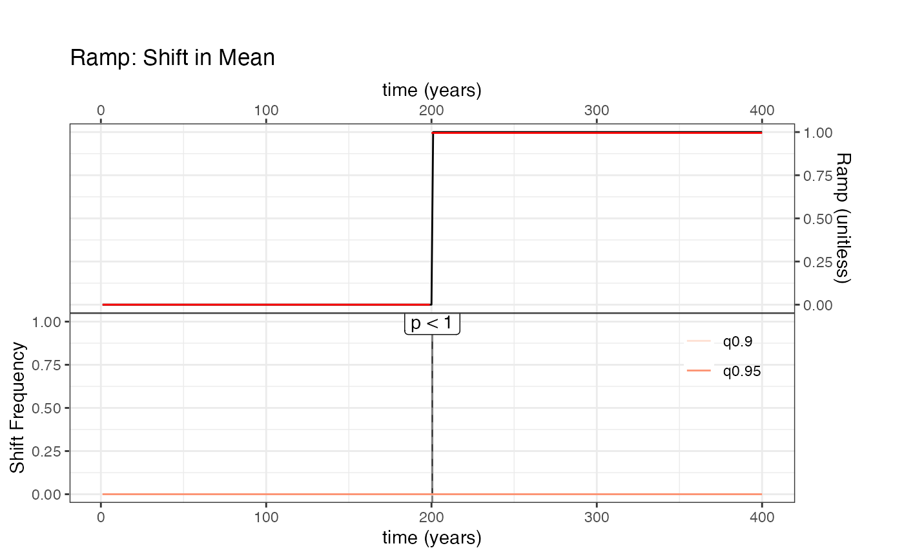
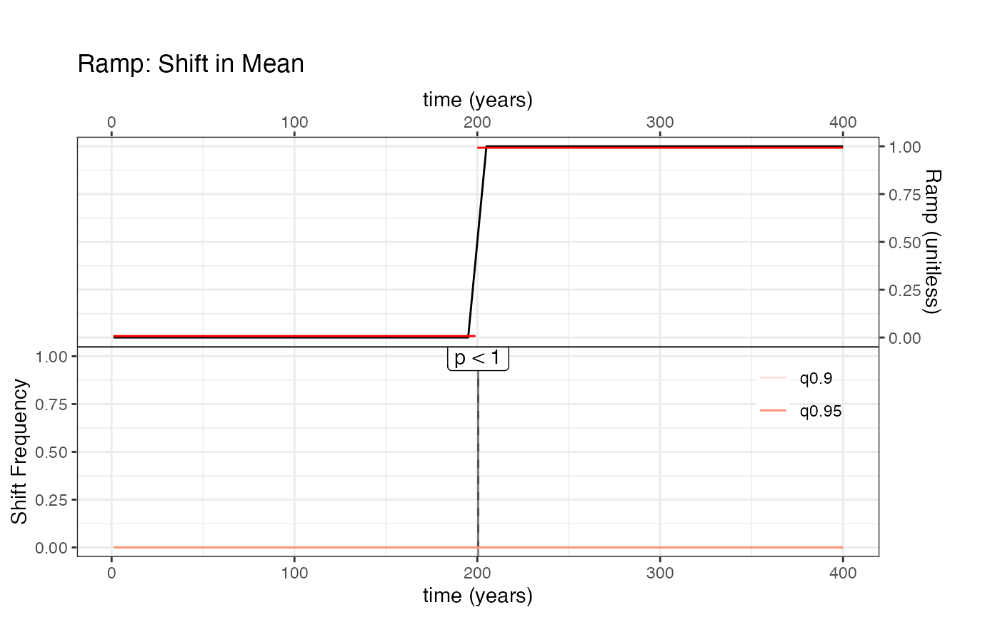
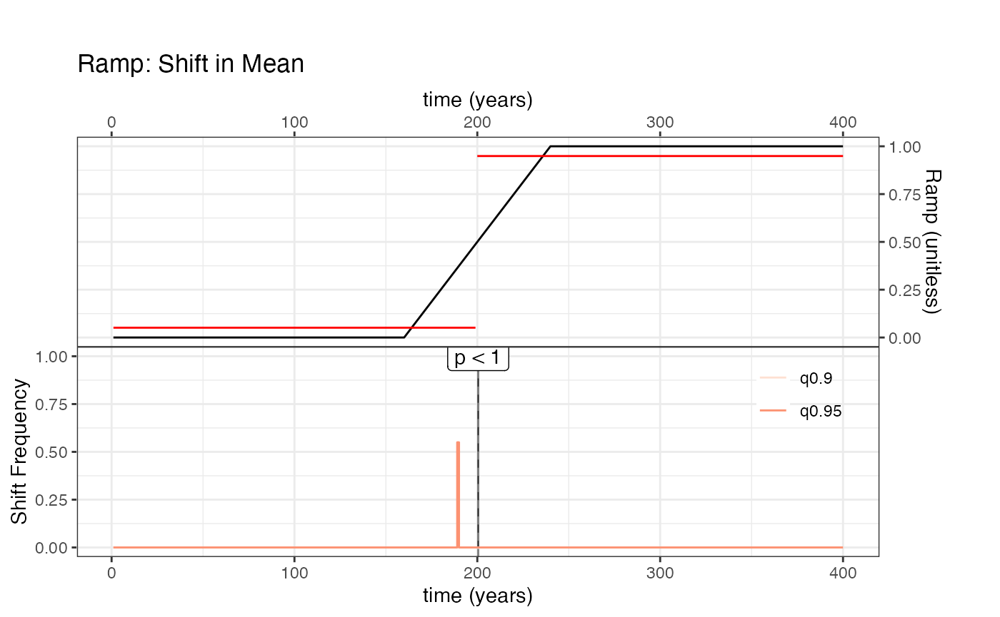
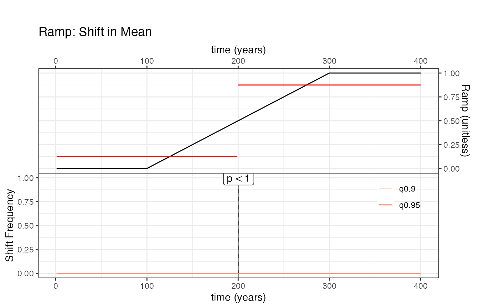

abruptShift_tests
abruptShift_tests.Rmd
library(actR)This notebook implements a test of the
actR::detectShiftCore() function on synthetic data (see
data_raw/makeSyntheticData.R for their construction).
The idea is to use the simplest model of a shift (linear ramp emulating either a step or gradual change) to evaluate the proportion of false negatives and false positives: how often is a gradual shift mistaken for an abrupt one, or missed altogether? How often is a shift identified when none exists? From these rates we construct receiver operating characteristic curves and their sensitivity to: - abruptness (the time over which the shift occurs, from 0 to T/2, where T is the length of the series) - noise levels. - age uncertainties.
lngth <- 400
time <- 1.0*seq(lngth)
pureshift <- linearRamp(lngth,width = 0)
ShiftHappens <- detectShift(time = time,
vals = pureshift,
vals.variable.name = 'Step Change',
time.units = 'years',
vals.units = 'unitless',
summary.bin.step = 1,
simulate.time.uncertainty = FALSE,
simulate.paleo.uncertainty = FALSE,
null.hypothesis.n = 50,n.ens = 50)
#> timeVariableName is at least partially absent in the input data
#> Testing null hypothesis with 50 simulations, each with 50 ensemble members.
#> This will probably take about 1 minutes
plot(ShiftHappens)
Now we’ll do the same, by looping over various values of the shift
widths <- c(0, lngth/40, lngth/20, lngth/10, lngth/5, lngth/2)
rampRes = vector(mode = "list",length = length(widths))
for(w in 1:length(widths)) {
rampRes[[w]] <- detectShift(time = time,
vals = linearRamp(lngth,width = widths[w]),
vals.variable.name = 'Ramp',
time.units = 'years',
vals.units = 'unitless',
summary.bin.step = 1,
simulate.time.uncertainty = FALSE,
simulate.paleo.uncertainty = FALSE,
null.hypothesis.n = 50)
plot(rampRes[[w]])
}
#> timeVariableName is at least partially absent in the input data
#> Testing null hypothesis with 50 simulations, each with 100 ensemble members.
#> This will probably take about 1 minutes
#> timeVariableName is at least partially absent in the input data
#> Testing null hypothesis with 50 simulations, each with 100 ensemble members.
#> This will probably take about 1 minutes
#> timeVariableName is at least partially absent in the input data
#> Testing null hypothesis with 50 simulations, each with 100 ensemble members.
#> This will probably take about 1 minutes
#> timeVariableName is at least partially absent in the input data
#> Testing null hypothesis with 50 simulations, each with 100 ensemble members.
#> This will probably take about 1 minutes#> timeVariableName is at least partially absent in the input data
#> Testing null hypothesis with 50 simulations, each with 100 ensemble members.
#> This will probably take about 1 minutes
#> timeVariableName is at least partially absent in the input data
#> Testing null hypothesis with 50 simulations, each with 100 ensemble members.
#> This will probably take about 1 minutes